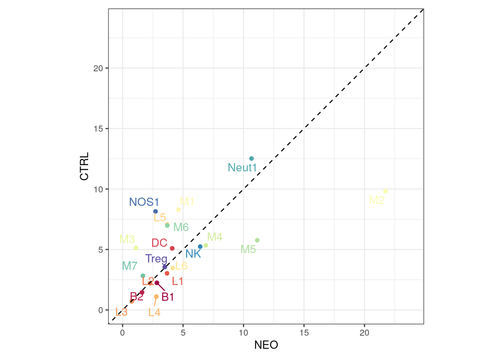
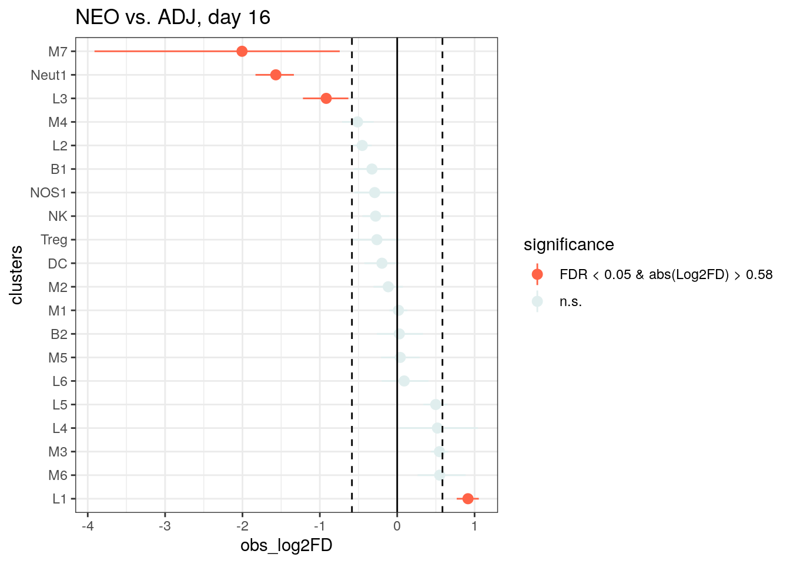
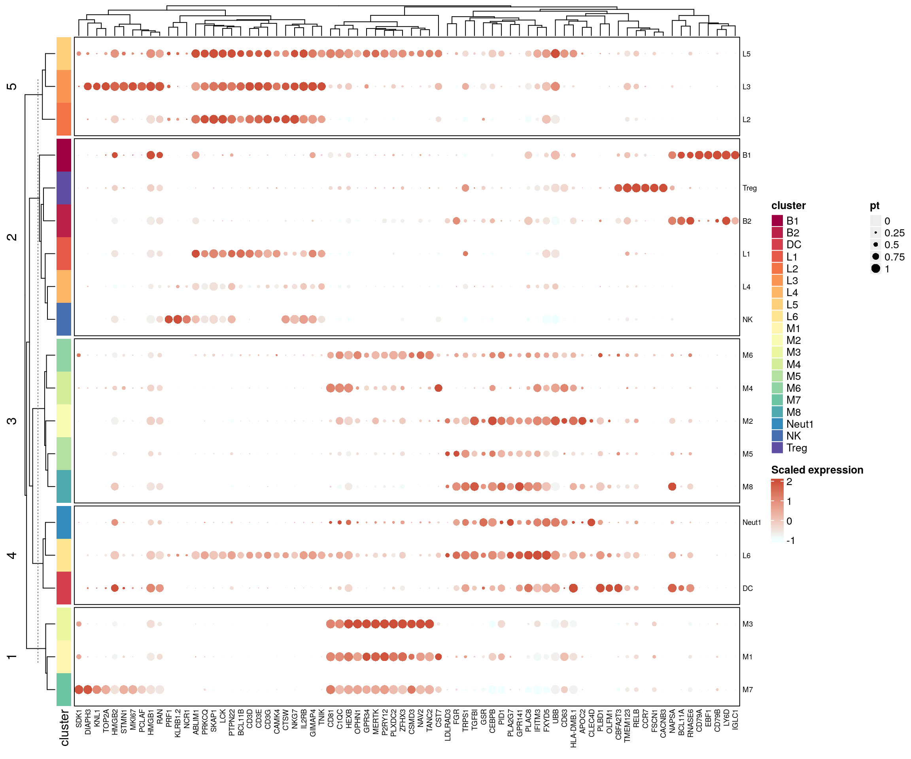
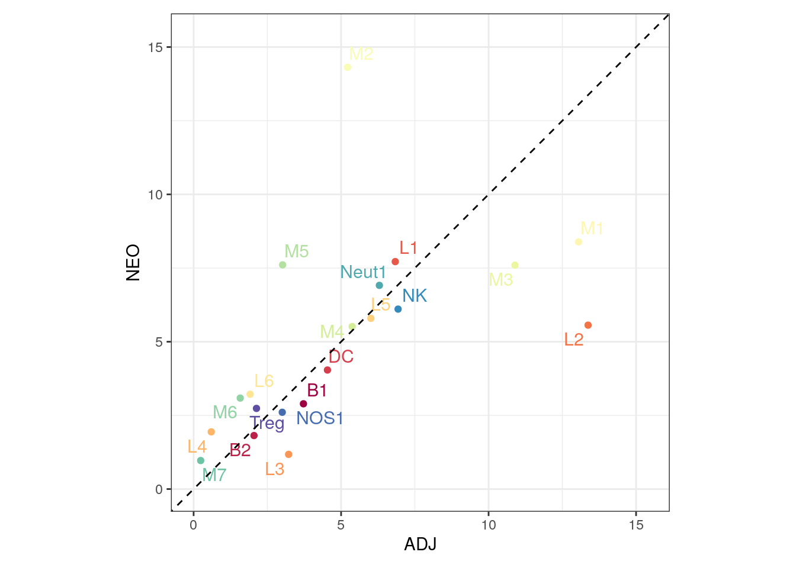

Comparative analysis of the Kluc tumor scRNAseq data
heinin
2024-02-26
Last updated: 2024-03-12
Checks: 5 2
Knit directory: PD1_mm/
This reproducible R Markdown analysis was created with workflowr (version 1.7.1). The Checks tab describes the reproducibility checks that were applied when the results were created. The Past versions tab lists the development history.
The R Markdown file has unstaged changes. To know which version of
the R Markdown file created these results, you’ll want to first commit
it to the Git repo. If you’re still working on the analysis, you can
ignore this warning. When you’re finished, you can run
wflow_publish to commit the R Markdown file and build the
HTML.
Great job! The global environment was empty. Objects defined in the global environment can affect the analysis in your R Markdown file in unknown ways. For reproduciblity it’s best to always run the code in an empty environment.
The command set.seed(20240223) was run prior to running
the code in the R Markdown file. Setting a seed ensures that any results
that rely on randomness, e.g. subsampling or permutations, are
reproducible.
Great job! Recording the operating system, R version, and package versions is critical for reproducibility.
Nice! There were no cached chunks for this analysis, so you can be confident that you successfully produced the results during this run.
Using absolute paths to the files within your workflowr project makes it difficult for you and others to run your code on a different machine. Change the absolute path(s) below to the suggested relative path(s) to make your code more reproducible.
| absolute | relative |
|---|---|
| /home/hnatri/PD1_mm/ | . |
| /home/hnatri/PD1_mm/code/utilities.R | code/utilities.R |
| /home/hnatri/PD1_mm/code/PD1_mm_themes.R | code/PD1_mm_themes.R |
| /home/hnatri/PD1_mm/code/CART_plot_functions.R | code/CART_plot_functions.R |
Great! You are using Git for version control. Tracking code development and connecting the code version to the results is critical for reproducibility.
The results in this page were generated with repository version 4cf95d7. See the Past versions tab to see a history of the changes made to the R Markdown and HTML files.
Note that you need to be careful to ensure that all relevant files for
the analysis have been committed to Git prior to generating the results
(you can use wflow_publish or
wflow_git_commit). workflowr only checks the R Markdown
file, but you know if there are other scripts or data files that it
depends on. Below is the status of the Git repository when the results
were generated:
Unstaged changes:
Modified: analysis/comparative_analysis.Rmd
Note that any generated files, e.g. HTML, png, CSS, etc., are not included in this status report because it is ok for generated content to have uncommitted changes.
These are the previous versions of the repository in which changes were
made to the R Markdown (analysis/comparative_analysis.Rmd)
and HTML (docs/comparative_analysis.html) files. If you’ve
configured a remote Git repository (see ?wflow_git_remote),
click on the hyperlinks in the table below to view the files as they
were in that past version.
| File | Version | Author | Date | Message |
|---|---|---|---|---|
| Rmd | 4cf95d7 | heinin | 2024-03-12 | Top markers and DEGs for all timepoints combined |
| html | 4cf95d7 | heinin | 2024-03-12 | Top markers and DEGs for all timepoints combined |
| Rmd | ea97b27 | heinin | 2024-02-27 | Filtering, comparative analysis |
| html | ea97b27 | heinin | 2024-02-27 | Filtering, comparative analysis |
| Rmd | 18c1bd4 | heinin | 2024-02-27 | Cell type proportion testing |
| html | 18c1bd4 | heinin | 2024-02-27 | Cell type proportion testing |
| Rmd | 3e207b9 | heinin | 2024-02-26 | Added scImmuCC annotations |
| Rmd | 196db6a | heinin | 2024-02-26 | Starting the comparative analysis |
Introduction
Adding annotations and comparing treatment groups/timepoints.
Packages and environment variables
suppressPackageStartupMessages({
#library(cli)
library(Seurat)
library(SeuratObject)
library(SeuratDisk)
library(tidyverse)
library(tibble)
library(ggplot2)
library(ggpubr)
library(ggrepel)
library(workflowr)
library(googlesheets4)
library(scProportionTest)})
setwd("/home/hnatri/PD1_mm/")
set.seed(9999)
options(ggrepel.max.overlaps = Inf)
# Colors, themes, cell type markers, and plot functions
source("/home/hnatri/PD1_mm/code/utilities.R")
source("/home/hnatri/PD1_mm/code/PD1_mm_themes.R")
source("/home/hnatri/PD1_mm/code/CART_plot_functions.R")Importing data
seurat_data <- readRDS("/tgen_labs/banovich/BCTCSF/PD1_mm_Seurat/PD1_mm_Seurat_merged.Rds")DimPlot of cell type annotations
celltypes <- sort(as.character(unique(seurat_data$celltype)))
plot_colors <- colorRampPalette(brewer.pal(11, "Paired"))(length(celltypes))
names(plot_colors) <- celltypes
DimPlot(seurat_data,
group.by = "celltype",
reduction = "umap",
raster = T,
label = T,
cols = plot_colors) &
coord_fixed(ratio = 1) &
theme_bw() &
NoLegend()
DimPlot(seurat_data,
group.by = "celltype",
split.by = "Treatment",
reduction = "umap",
raster = T,
#label = T,
cols = plot_colors) &
coord_fixed(ratio = 1) &
theme_bw() &
NoLegend()
| Version | Author | Date |
|---|---|---|
| 4cf95d7 | heinin | 2024-03-12 |
Cell type proportion differences
In scatter plots, the proportions of cell types in each pair of treatment groups are plotted against each other with one group on each axis. The forest plots show the significance level.
unique(seurat_data$Treatment)[1] "ADJ" "CTRL" "NEO" unique(seurat_data$Day)[1] 16 12table(seurat_data$celltype, seurat_data$Treatment)
ADJ CTRL NEO
M1 1090 2163 1603
Mono1 436 1444 2735
M2 910 1634 1452
L1 571 1420 1475
Neut1 526 1498 1321
L2 1117 1045 1063
NK 579 992 1167
M3 449 1117 1054
M4 502 921 1107
M5 252 665 1454
NOS1 251 1619 498
DC 379 773 772
M6 132 763 590
B1 311 568 553
Treg 178 521 523
M7 160 403 615
B2 171 320 347
L3 269 305 225
L4 50 154 371
M8 20 281 185create_clusterpropplot(seurat_data,
group_var = "Treatment",
group1 = "ADJ",
group2 = "CTRL",
plot_var = "celltype",
plot_colors = plot_colors,
var_names = c("ADJ", "CTRL"),
legend_title = "Treatment")Warning: `aes_string()` was deprecated in ggplot2 3.0.0.
ℹ Please use tidy evaluation idioms with `aes()`.
ℹ See also `vignette("ggplot2-in-packages")` for more information.
This warning is displayed once every 8 hours.
Call `lifecycle::last_lifecycle_warnings()` to see where this warning was
generated.
create_clusterpropplot(seurat_data,
group_var = "Treatment",
group1 = "NEO",
group2 = "CTRL",
plot_var = "celltype",
plot_colors = plot_colors,
var_names = c("NEO", "CTRL"),
legend_title = "Treatment")
create_clusterpropplot(seurat_data,
group_var = "Treatment",
group1 = "ADJ",
group2 = "NEO",
plot_var = "celltype",
plot_colors = plot_colors,
var_names = c("ADJ", "NEO"),
legend_title = "Treatment")
# Day 12
create_clusterpropplot(subset(seurat_data, subset = Day == 12),
group_var = "Treatment",
group1 = "NEO",
group2 = "CTRL",
plot_var = "celltype",
plot_colors = plot_colors,
var_names = c("NEO", "CTRL"),
legend_title = "Treatment, Day 12")
# Day 16
create_clusterpropplot(subset(seurat_data, subset = Day == 16),
group_var = "Treatment",
group1 = "ADJ",
group2 = "CTRL",
plot_var = "celltype",
plot_colors = plot_colors,
var_names = c("ADJ", "CTRL"),
legend_title = "Treatment, Day 16")
create_clusterpropplot(subset(seurat_data, subset = Day == 16),
group_var = "Treatment",
group1 = "NEO",
group2 = "CTRL",
plot_var = "celltype",
plot_colors = plot_colors,
var_names = c("NEO", "CTRL"),
legend_title = "Treatment, Day 16")
create_clusterpropplot(subset(seurat_data, subset = Day == 16),
group_var = "Treatment",
group1 = "ADJ",
group2 = "NEO",
plot_var = "celltype",
plot_colors = plot_colors,
var_names = c("ADJ", "NEO"),
legend_title = "Treatment, Day 16")
# Using scProportionTest
prop_test <- sc_utils(seurat_data)
prop_test <- permutation_test(
prop_test, cluster_identity = "celltype",
sample_1 = "CTRL", sample_2 = "ADJ",
sample_identity = "Treatment")
perm_plot <- permutation_plot(prop_test)
perm_plot + scale_colour_manual(values = c("tomato", "azure2")) +
#NoLegend() +
ggtitle("ADJ vs. CTRL, all timepoints")Scale for colour is already present.
Adding another scale for colour, which will replace the existing scale.
prop_test <- permutation_test(
prop_test, cluster_identity = "celltype",
sample_1 = "CTRL", sample_2 = "NEO",
sample_identity = "Treatment")
perm_plot <- permutation_plot(prop_test)
perm_plot + scale_colour_manual(values = c("tomato", "azure2")) +
#NoLegend() +
ggtitle("NEO vs. CTRL, all timepoints")Scale for colour is already present.
Adding another scale for colour, which will replace the existing scale.
prop_test <- permutation_test(
prop_test, cluster_identity = "celltype",
sample_1 = "ADJ", sample_2 = "NEO",
sample_identity = "Treatment")
perm_plot <- permutation_plot(prop_test)
perm_plot + scale_colour_manual(values = c("tomato", "azure2")) +
#NoLegend() +
ggtitle("NEO vs. ADJ, all timepoints")Scale for colour is already present.
Adding another scale for colour, which will replace the existing scale.
# Day 12 only
# For day 12, no ADJ sample
prop_test <- sc_utils(subset(seurat_data, subset = Day == 12))
prop_test <- permutation_test(
prop_test, cluster_identity = "celltype",
sample_1 = "CTRL", sample_2 = "NEO",
sample_identity = "Treatment")
perm_plot <- permutation_plot(prop_test)
perm_plot + scale_colour_manual(values = c("tomato", "azure2")) +
#NoLegend() +
ggtitle("NEO vs. CTRL, day 12")Scale for colour is already present.
Adding another scale for colour, which will replace the existing scale.
# Day 16 only
prop_test <- sc_utils(subset(seurat_data, subset = Day == 16))
prop_test <- permutation_test(
prop_test, cluster_identity = "celltype",
sample_1 = "CTRL", sample_2 = "ADJ",
sample_identity = "Treatment")
perm_plot <- permutation_plot(prop_test)
perm_plot + scale_colour_manual(values = c("tomato", "azure2")) +
#NoLegend() +
ggtitle("ADJ vs. CTRL, day 16")Scale for colour is already present.
Adding another scale for colour, which will replace the existing scale.
prop_test <- permutation_test(
prop_test, cluster_identity = "celltype",
sample_1 = "CTRL", sample_2 = "NEO",
sample_identity = "Treatment")
perm_plot <- permutation_plot(prop_test)
perm_plot + scale_colour_manual(values = c("tomato", "azure2")) +
#NoLegend() +
ggtitle("NEO vs. CTRL, day 16")Scale for colour is already present.
Adding another scale for colour, which will replace the existing scale.
prop_test <- permutation_test(
prop_test, cluster_identity = "celltype",
sample_1 = "ADJ", sample_2 = "NEO",
sample_identity = "Treatment")
perm_plot <- permutation_plot(prop_test)
perm_plot + scale_colour_manual(values = c("tomato", "azure2")) +
#NoLegend() +
ggtitle("NEO vs. ADJ, day 16")Scale for colour is already present.
Adding another scale for colour, which will replace the existing scale.
Cluster markers
# Dropping MT and RP genes before calling markers
RBMTgenes <- grep(pattern = "^RP[SL]|^MRP[SL]|^MT-",
x = rownames(seurat_data@assays$RNA_human@data),
value = TRUE, invert = TRUE)
seurat_data <- subset(seurat_data, features = RBMTgenes)
# Top markers for each cluster
markers <- presto::wilcoxauc(seurat_data,
group_by = "celltype",
assay = "data",
seurat_assay = "RNA_human")
sig_markers <- markers %>% filter(auc>0.8, padj<0.01)
dim(sig_markers)[1] 2206 10table(sig_markers$group)
B1 B2 DC L1 L2 L3 M1 M2 M4 M7 M8 Mono1 Neut1
28 73 42 10 32 997 74 135 25 65 487 37 53
NK NOS1 Treg
20 15 113 table(sig_markers$group) %>% as.data.frame() %>%
ggplot(aes(x = reorder(Var1, -Freq), y = Freq, fill = Var1)) +
geom_bar(stat = "identity") +
scale_fill_manual(values = plot_colors) +
theme_classic2() +
theme(axis.text.x = element_text(angle = 45, vjust = 1, hjust = 1)) +
NoLegend() +
xlab("Cell type") +
ylab("# cell type markers")
| Version | Author | Date |
|---|---|---|
| 4cf95d7 | heinin | 2024-03-12 |
# Saving to a file
write.table(sig_markers, "/scratch/hnatri/CART/PD1_CART_celltype_markers.tsv",
sep = "\t", quote = F, row.names = F)
# Top markers for each cluster
sig_markers %>% group_by(group) %>% slice_max(order_by = auc, n = 10)# A tibble: 160 × 10
# Groups: group [16]
feature group avgExpr logFC statistic auc pval padj pct_in pct_out
<chr> <chr> <dbl> <dbl> <dbl> <dbl> <dbl> <dbl> <dbl> <dbl>
1 CD79B B1 8.07 7.89 62293006. 0.975 0 0 96.4 12.9
2 CD79A B1 12.0 12.0 62271029 0.974 0 0 95.2 1.14
3 LY6D B1 17.2 16.6 62213838 0.973 0 0 97.2 3.14
4 IGKC B1 643. 642. 61544516 0.963 0 0 94.3 16.6
5 EBF1 B1 18.1 18.0 60798972. 0.951 0 0 90.8 1.11
6 IGLC1 B1 7.65 7.48 60499564 0.946 0 0 91.4 2.07
7 IGHM B1 86.4 84.5 59814459. 0.936 0 0 95.7 54.7
8 MS4A1 B1 6.62 6.59 59724680 0.934 0 0 87.3 0.802
9 BANK1 B1 15.6 15.1 59243218 0.927 0 0 89.3 14.8
10 PAX5 B1 4.31 4.29 58841820. 0.921 0 0 84.6 0.690
# ℹ 150 more rowsDEGs between treatment groups
# For each cluster, top DEGs between NEO and CTRL
DEG_NEO_CTRL <- lapply(unique(seurat_data$celltype), function(xx){
data_subset <- subset(seurat_data, subset = celltype == xx)
if (all((c("NEO", "CTRL") %in% data_subset$Treatment) == c(T, T))){
markers <- presto::wilcoxauc(data_subset,
group_by = "Treatment",
groups_use = c("NEO", "CTRL"),
assay = "data",
seurat_assay = "RNA_human")
markers$celltype <- xx
return(markers)
} else {
return(NULL)
}
})
names(DEG_NEO_CTRL) <- unique(seurat_data$celltype)
DEG_NEO_CTRL[sapply(DEG_NEO_CTRL, is.null)] <- NULL
DEG_NEO_CTRL_df <- as.data.frame(do.call(rbind, DEG_NEO_CTRL))
DEG_NEO_CTRL_df_sig <- DEG_NEO_CTRL_df %>%
filter(group=="NEO",
padj < 0.01,
auc > 0.6,
(pct_in > 50 | pct_out > 50))
# Saving to a file
write.table(DEG_NEO_CTRL_df_sig, "/scratch/hnatri/CART/PD1_CART_DEG_NEO_CTRL_sig.tsv",
sep = "\t", quote = F, row.names = F)
# Plotting numbers of DEGs
table(DEG_NEO_CTRL_df_sig$celltype) %>% as.data.frame() %>%
ggplot(aes(x = reorder(Var1, -Freq), y = Freq, fill = Var1)) +
geom_bar(stat = "identity") +
scale_fill_manual(values = plot_colors) +
theme_classic2() +
theme(axis.text.x = element_text(angle = 45, vjust = 1, hjust = 1)) +
NoLegend() +
xlab("Cell type") +
ylab("# DEGs, NEO vs. CTRL, all timepoints")
| Version | Author | Date |
|---|---|---|
| 4cf95d7 | heinin | 2024-03-12 |
# Top DEGs for each cluster
DEG_NEO_CTRL_df_sig %>% group_by(group) %>% slice_max(order_by = auc, n = 10)# A tibble: 10 × 11
# Groups: group [1]
feature group avgExpr logFC statistic auc pval padj pct_in
<chr> <chr> <dbl> <dbl> <dbl> <dbl> <dbl> <dbl> <dbl>
1 CMSS1 NEO 58.8 35.9 61586 0.897 3.14e- 55 5.27e- 51 100
2 CMSS1 NEO 44.1 25.8 982892 0.885 1.23e-205 2.06e-201 99.8
3 LARS2 NEO 15.7 10.2 60629 0.883 1.07e- 51 8.97e- 48 100
4 CMSS1 NEO 20.8 11.6 2089805 0.881 2.91e-293 4.88e-289 99.1
5 GPHN NEO 29.5 17.1 59892. 0.873 7.99e- 49 4.47e- 45 100
6 LARS2 NEO 9.96 6.11 958116 0.863 1.34e-183 1.12e-179 99.5
7 GPHN NEO 18.6 9.57 931094. 0.838 1.67e-159 9.32e-156 99.5
8 CMSS1 NEO 28.6 14.2 496041 0.831 1.30e-112 2.18e-108 99.9
9 CMSS1 NEO 30.5 16.2 959240. 0.829 3.80e-153 6.38e-149 99.9
10 CAMK1D NEO 23.7 13.4 56616 0.825 1.48e- 37 6.20e- 34 100
# ℹ 2 more variables: pct_out <dbl>, celltype <fct># For each cluster, top DEGs between NEO and ADJ
DEG_NEO_ADJ <- lapply(unique(seurat_data$celltype), function(xx){
data_subset <- subset(seurat_data, subset = celltype == xx)
if (all((c("NEO", "ADJ") %in% data_subset$Treatment) == c(T, T))){
markers <- presto::wilcoxauc(data_subset,
group_by = "Treatment",
groups_use = c("NEO", "ADJ"),
assay = "data",
seurat_assay = "RNA_human")
markers$celltype <- xx
return(markers)
} else {
return(NULL)
}
})
names(DEG_NEO_ADJ) <- unique(seurat_data$celltype)
DEG_NEO_ADJ[sapply(DEG_NEO_ADJ, is.null)] <- NULL
DEG_NEO_ADJ_df <- as.data.frame(do.call(rbind, DEG_NEO_ADJ))
DEG_NEO_ADJ_df_sig <- DEG_NEO_ADJ_df %>%
filter(group == "NEO",
padj < 0.01,
auc > 0.6,
(pct_in > 50 | pct_out > 50))
# Saving to a file
write.table(DEG_NEO_ADJ_df_sig, "/scratch/hnatri/CART/PD1_CART_DEG_NEO_ADJ_sig.tsv",
sep = "\t", quote = F, row.names = F)
# Plotting
table(DEG_NEO_ADJ_df_sig$celltype) %>% as.data.frame() %>%
ggplot(aes(x = reorder(Var1, -Freq), y = Freq, fill = Var1)) +
geom_bar(stat = "identity") +
scale_fill_manual(values = plot_colors) +
theme_classic2() +
theme(axis.text.x = element_text(angle = 45, vjust = 1, hjust = 1)) +
NoLegend() +
xlab("Cell type") +
ylab("# DEGs, NEO vs. ADJ, all timepoints")
| Version | Author | Date |
|---|---|---|
| 4cf95d7 | heinin | 2024-03-12 |
# Top DEGs for each cluster
DEG_NEO_ADJ_df_sig %>% group_by(group) %>% slice_max(order_by = auc, n = 10)# A tibble: 10 × 11
# Groups: group [1]
feature group avgExpr logFC statistic auc pval padj pct_in
<chr> <chr> <dbl> <dbl> <dbl> <dbl> <dbl> <dbl> <dbl>
1 LARS2 NEO 15.7 8.61 50174 0.829 1.65e- 36 2.77e- 32 100
2 GPHN NEO 16.1 7.16 566186 0.815 1.84e- 99 3.09e- 95 99.8
3 GPHN NEO 29.5 13.7 48887 0.808 4.29e- 32 3.60e- 28 100
4 LARS2 NEO 9.96 4.93 945333 0.796 2.68e-127 4.50e-123 99.5
5 LARS2 NEO 8.53 4.15 551043 0.793 1.06e- 86 8.90e- 83 99.5
6 LARS2 NEO 9.55 4.33 428586 0.771 1.55e- 68 2.60e- 64 98.6
7 LARS2 NEO 6.01 3.39 364471 0.770 1.68e- 62 2.82e- 58 96.4
8 LARS2 NEO 6.97 3.45 132052 0.768 1.99e- 39 3.35e- 35 99.3
9 GPHN NEO 18.6 7.56 910148. 0.767 4.19e-103 3.52e- 99 99.5
10 LARS2 NEO 7.71 3.53 513471 0.760 1.28e- 70 2.16e- 66 99.5
# ℹ 2 more variables: pct_out <dbl>, celltype <fct># For each cluster, top DEGs between ADJ and CTRL
DEG_ADJ_CTRL <- lapply(unique(seurat_data$celltype), function(xx){
data_subset <- subset(seurat_data, subset = celltype == xx)
if (all((c("ADJ", "CTRL") %in% data_subset$Treatment) == c(T, T))){
markers <- presto::wilcoxauc(data_subset,
group_by = "Treatment",
groups_use = c("ADJ", "CTRL"),
assay = "data",
seurat_assay = "RNA_human")
markers$celltype <- xx
return(markers)
} else {
return(NULL)
}
})
names(DEG_ADJ_CTRL) <- unique(seurat_data$celltype)
DEG_ADJ_CTRL[sapply(DEG_ADJ_CTRL, is.null)] <- NULL
DEG_ADJ_CTRL_df <- as.data.frame(do.call(rbind, DEG_ADJ_CTRL))
DEG_ADJ_CTRL_df_sig <- DEG_ADJ_CTRL_df %>%
filter(group == "NEO",
padj < 0.01,
auc > 0.6,
(pct_in > 50 | pct_out > 50))
# Saving to a file
write.table(DEG_ADJ_CTRL_df_sig, "/scratch/hnatri/CART/PD1_CART_DEG_ADJ_CTRL_sig.tsv",
sep = "\t", quote = F, row.names = F)
# Plotting
table(DEG_ADJ_CTRL_df_sig$celltype) %>% as.data.frame() %>%
ggplot(aes(x = reorder(Var1, -Freq), y = Freq, fill = Var1)) +
geom_bar(stat = "identity") +
scale_fill_manual(values = plot_colors) +
theme_classic2() +
theme(axis.text.x = element_text(angle = 45, vjust = 1, hjust = 1)) +
NoLegend() +
xlab("Cell type") +
ylab("# DEGs, ADJ vs. CTRL, all timepoints")
| Version | Author | Date |
|---|---|---|
| 4cf95d7 | heinin | 2024-03-12 |
# Top DEGs for each cluster
DEG_ADJ_CTRL_df_sig %>% group_by(group) %>% slice_max(order_by = auc, n = 10)# A tibble: 0 × 11
# Groups: group [0]
# ℹ 11 variables: feature <chr>, group <chr>, avgExpr <dbl>, logFC <dbl>,
# statistic <dbl>, auc <dbl>, pval <dbl>, padj <dbl>, pct_in <dbl>,
# pct_out <dbl>, celltype <fct># Overlap of DEGs between NEO vs. CTRL and NEO vs. ADJ
intersect(DEG_NEO_ADJ_df_sig$feature, DEG_NEO_CTRL_df_sig$feature) [1] "CAMK1D" "CDK8" "LARS2" "GPHN" "CMSS1" "DDX5" "LYZ"
[8] "ZFP36L2" "ATP8" "TMSB10" "LGALS1" "FAU" inner_join(DEG_NEO_ADJ_df_sig, DEG_NEO_CTRL_df_sig, by = c('feature','celltype')) feature group.x avgExpr.x logFC.x statistic.x auc.x pval.x
1 CAMK1D NEO 11.062088 3.0137447 757348.5 0.6378364 6.062531e-29
2 CDK8 NEO 4.822201 1.7407331 822949.0 0.6930850 9.717124e-56
3 LARS2 NEO 9.962371 4.9265604 945333.0 0.7961564 2.683037e-127
4 GPHN NEO 18.617121 7.5553487 910147.5 0.7665233 4.191093e-103
5 CMSS1 NEO 44.070555 12.2639301 820416.0 0.6909517 9.241756e-54
6 CDK8 NEO 3.570937 1.0731344 832763.5 0.6302512 4.010327e-27
7 LARS2 NEO 5.017906 2.1563679 962711.5 0.7285983 2.745044e-79
8 DDX5 NEO 16.255510 3.4423228 834645.0 0.6316751 3.529407e-27
9 GPHN NEO 11.600551 3.3104411 929246.0 0.7032710 1.859516e-62
10 CMSS1 NEO 20.842287 6.8818469 975180.5 0.7380351 8.505467e-85
11 CAMK1D NEO 23.737778 10.8121272 45402.0 0.7501363 9.010737e-22
12 CDK8 NEO 7.213333 2.5479058 41600.0 0.6873193 5.775778e-13
13 LARS2 NEO 15.742222 8.6083932 50174.0 0.8289798 1.652220e-36
14 GPHN NEO 29.484444 13.6926229 48887.0 0.8077158 4.291708e-32
15 CMSS1 NEO 58.764444 18.5228088 43418.5 0.7173647 8.288666e-17
16 ZFP36L2 NEO 5.302222 1.7631888 36891.0 0.6095167 2.422135e-05
17 ATP8 NEO 2.297778 1.1007518 38038.0 0.6284676 3.940878e-07
18 CDK8 NEO 3.466441 1.0601359 512968.0 0.6090629 1.024617e-14
19 LARS2 NEO 7.044746 3.2461468 586130.0 0.6959304 2.274650e-43
20 GPHN NEO 13.610847 4.7807249 557291.5 0.6616896 5.786252e-30
21 CDK8 NEO 2.781981 1.1232506 226347.5 0.6177472 1.362336e-09
22 CDK8 NEO 5.878049 1.6330289 353787.0 0.6366350 9.703446e-19
23 LARS2 NEO 9.551942 4.3348107 428586.0 0.7712348 1.550526e-68
24 GPHN NEO 20.196929 6.2805940 395245.0 0.7112382 3.821126e-42
25 CMSS1 NEO 33.936766 9.0801923 386584.5 0.6956537 2.241076e-36
26 CDK8 NEO 3.267631 0.8464092 104700.0 0.6087811 7.700787e-08
27 LARS2 NEO 6.971067 3.4501666 132052.0 0.7678201 1.994846e-39
28 GPHN NEO 13.737794 5.2297553 123615.0 0.7187629 1.036320e-26
29 CMSS1 NEO 28.529837 7.5105446 113774.5 0.6615450 2.933183e-15
30 LARS2 NEO 7.269430 3.2958153 218405.0 0.7464592 1.862468e-42
31 GPHN NEO 14.725389 5.8045443 219718.5 0.7509484 9.626371e-44
32 CMSS1 NEO 28.637306 8.0673849 203700.0 0.6962008 2.334658e-27
33 CAMK1D NEO 8.491461 4.4513720 328364.0 0.6938548 5.135574e-33
34 CDK8 NEO 2.437381 1.0253547 306052.5 0.6467091 3.208599e-20
35 LARS2 NEO 6.007590 3.3906636 364471.0 0.7701513 1.679593e-62
36 GPHN NEO 10.442125 4.8719693 355331.0 0.7508378 8.632324e-54
37 CMSS1 NEO 20.090133 6.0389079 319232.5 0.6745593 7.146759e-27
38 LARS2 NEO 6.119152 2.6907112 1237816.5 0.7084289 3.489257e-76
39 GPHN NEO 12.467873 4.0733773 1185100.5 0.6782584 7.151164e-56
40 CMSS1 NEO 21.711790 6.0934418 1172275.5 0.6709183 1.980533e-51
41 CAMK1D NEO 7.564696 1.6994108 412881.5 0.6110490 3.182918e-14
42 CDK8 NEO 3.492716 1.0833899 421943.0 0.6244596 1.059626e-17
43 LARS2 NEO 7.706084 3.5316453 513471.0 0.7599176 1.284174e-70
44 GPHN NEO 13.816624 4.9064338 485582.0 0.7186429 2.684392e-50
45 CAMK1D NEO 7.130019 2.4614798 60768.0 0.6527596 9.313598e-10
46 LARS2 NEO 5.032505 2.2740778 64652.0 0.6944808 5.912297e-15
47 GPHN NEO 11.508604 2.7838851 57837.5 0.6212806 1.269981e-06
48 CMSS1 NEO 19.263862 4.3593680 57340.5 0.6159420 3.704360e-06
49 LARS2 NEO 4.844380 1.7566611 39813.5 0.6709726 1.853208e-10
50 GPHN NEO 11.746398 2.6352866 36822.0 0.6205572 7.802859e-06
51 CMSS1 NEO 19.994236 4.9240609 38064.5 0.6414969 1.577997e-07
52 LARS2 NEO 9.563071 4.5286676 900825.5 0.7554346 3.162214e-66
53 GPHN NEO 16.444973 6.4747891 889242.0 0.7457206 2.748041e-61
54 CMSS1 NEO 32.620841 6.4579969 744954.0 0.6247203 5.337960e-17
55 CAMK1D NEO 14.564724 2.6559784 427605.5 0.6153961 8.513314e-15
56 CDK8 NEO 3.319455 1.1160329 446755.0 0.6429554 2.528697e-22
57 LARS2 NEO 8.533687 4.1534585 551043.0 0.7930434 1.060863e-86
58 GPHN NEO 16.146101 7.1575083 566186.0 0.8148367 1.840011e-99
59 CMSS1 NEO 30.891749 8.9811023 501512.0 0.7217599 3.238796e-50
60 CAMK1D NEO 14.536145 5.6158259 80131.5 0.6410623 2.649438e-10
61 CDK8 NEO 3.441767 1.5214483 83544.5 0.6683667 2.498811e-14
62 TMSB10 NEO 19.967871 7.7288277 80910.0 0.6472904 3.170884e-11
63 LARS2 NEO 8.594378 3.6860110 89463.5 0.7157195 3.954768e-22
64 GPHN NEO 15.508032 6.6554425 87893.5 0.7031593 9.667077e-20
65 CMSS1 NEO 26.307229 9.7215715 88103.0 0.7048353 5.031976e-20
66 CDK8 NEO 5.136585 1.2615854 60141.0 0.6111890 1.296738e-05
67 LARS2 NEO 10.097561 3.9850610 71357.0 0.7251728 1.354335e-18
68 GPHN NEO 20.258537 5.1897866 67236.0 0.6832927 8.353056e-13
69 CMSS1 NEO 32.042276 6.9297764 63913.5 0.6495274 5.389344e-09
padj.x pct_in.x pct_out.x celltype group.y avgExpr.y logFC.y
1 2.482237e-26 99.81185 99.28380 L2 NEO 11.062088 4.7864903
2 4.078034e-52 96.89558 90.51030 L2 NEO 4.822201 2.6212444
3 4.504015e-123 99.52963 97.58281 L2 NEO 9.962371 6.1068683
4 3.517794e-99 99.52963 99.73142 L2 NEO 18.617121 9.5740592
5 3.102827e-50 99.81185 99.82095 L2 NEO 44.070555 25.8456747
6 9.617338e-24 93.66391 86.26374 M2 NEO 3.570937 1.4809734
7 2.304053e-75 97.17631 89.12088 M2 NEO 5.017906 2.5307582
8 9.617338e-24 99.93113 99.89011 M2 NEO 16.255510 3.2218499
9 1.040523e-58 99.38017 99.56044 M2 NEO 11.600551 4.7260100
10 1.427813e-80 99.10468 99.67033 M2 NEO 20.842287 11.6305362
11 5.042108e-18 100.00000 99.62825 L3 NEO 23.737778 13.3738434
12 1.939160e-09 98.66667 96.28253 L3 NEO 7.213333 4.0198907
13 2.773581e-32 100.00000 98.51301 L3 NEO 15.742222 10.2143534
14 3.602245e-28 100.00000 98.88476 L3 NEO 29.484444 17.0811658
15 3.478546e-13 100.00000 100.00000 L3 NEO 58.764444 35.8791985
16 3.872418e-03 92.44444 86.98885 L3 NEO 5.302222 2.1087796
17 2.788012e-04 73.77778 62.45353 L3 NEO 2.297778 1.0420401
18 1.421507e-12 87.45763 83.01226 L1 NEO 3.466441 1.9798210
19 3.818455e-39 94.37288 92.46935 L1 NEO 7.044746 4.2686894
20 1.079265e-26 97.55932 98.94921 L1 NEO 13.610847 7.3080306
21 3.792625e-08 79.57359 70.63492 M5 NEO 2.781981 0.9037853
22 2.327025e-15 97.47064 95.41833 M4 NEO 5.878049 1.7846720
23 2.602867e-64 98.55465 97.80876 M4 NEO 9.551942 3.5932017
24 3.207262e-38 99.36766 99.60159 M4 NEO 20.196929 6.5389482
25 1.254031e-32 99.36766 99.20319 M4 NEO 33.936766 15.8911634
26 2.585462e-05 90.41591 82.63666 B1 NEO 3.267631 1.3098846
27 3.348749e-35 99.27667 91.96141 B1 NEO 6.971067 3.2245880
28 8.698352e-23 99.81917 99.35691 B1 NEO 13.737794 5.3803995
29 1.230984e-11 99.63834 100.00000 B1 NEO 28.529837 13.5879358
30 1.563263e-38 99.09326 93.66755 DC NEO 7.269430 3.1879294
31 1.615979e-39 99.22280 98.94459 DC NEO 14.725389 6.2027495
32 1.306397e-23 99.87047 99.73615 DC NEO 28.637306 14.1573574
33 2.155272e-29 95.73055 83.96437 M3 NEO 8.491461 3.0778532
34 3.366422e-17 80.92979 65.03341 M3 NEO 2.437381 1.1777574
35 2.819533e-58 96.39469 86.63697 M3 NEO 6.007590 3.2752714
36 7.245541e-50 98.86148 94.20935 M3 NEO 10.442125 5.2290545
37 1.333029e-23 99.43074 98.44098 M3 NEO 20.090133 10.5834184
38 5.857415e-72 94.94697 91.28440 M1 NEO 6.119152 2.9314493
39 6.002329e-52 98.00374 98.53211 M1 NEO 12.467873 4.9981548
40 1.108240e-47 97.87898 99.26606 M1 NEO 21.711790 11.2351376
41 2.323115e-12 98.97172 98.61831 NK NEO 7.564696 3.1352603
42 1.400625e-15 91.51671 84.45596 NK NEO 3.492716 1.8435228
43 2.155743e-66 99.48586 95.50950 NK NEO 7.706084 4.3058824
44 9.012579e-47 99.74293 99.13644 NK NEO 13.816624 6.3771077
45 3.908684e-06 95.21989 86.51685 Treg NEO 7.130019 0.9419193
46 4.962486e-11 94.07266 87.64045 Treg NEO 5.032505 1.9346161
47 1.254069e-03 98.66157 96.06742 Treg NEO 11.508604 3.0268384
48 2.591046e-03 99.61759 99.43820 Treg NEO 19.263862 8.4193326
49 3.888726e-07 92.50720 87.13450 B2 NEO 4.844380 1.9756304
50 4.920942e-04 97.98271 98.24561 B2 NEO 11.746398 4.0088977
51 4.647341e-05 98.84726 100.00000 B2 NEO 19.994236 9.4848613
52 5.308408e-62 99.19561 93.11927 Mono1 NEO 9.563071 4.1136253
53 2.306568e-57 99.67093 99.08257 Mono1 NEO 16.444973 6.5904019
54 1.066766e-14 99.74406 99.54128 Mono1 NEO 32.620841 14.6797052
55 1.190942e-12 99.69720 99.42966 Neut1 NEO 14.564724 3.6608519
56 1.212835e-19 91.44587 85.36122 Neut1 NEO 3.319455 1.2567046
57 8.904350e-83 99.47010 95.62738 Neut1 NEO 8.533687 3.4348882
58 3.088826e-95 99.84860 99.23954 Neut1 NEO 16.146101 6.4137917
59 1.359242e-46 100.00000 99.80989 Neut1 NEO 30.891749 12.6046993
60 4.941791e-07 97.38956 96.01594 NOS1 NEO 14.536145 5.9079790
61 1.048689e-10 88.15261 70.91633 NOS1 NEO 3.441767 1.7493644
62 7.604232e-08 86.14458 57.76892 NOS1 NEO 19.967871 4.8146905
63 6.638868e-18 98.79518 94.42231 NOS1 NEO 8.594378 4.5079044
64 5.409374e-16 99.19679 96.01594 NOS1 NEO 15.508032 7.9669574
65 4.223589e-16 99.59839 99.60159 NOS1 NEO 26.307229 14.6364445
66 4.154265e-04 96.74797 94.37500 M7 NEO 5.136585 1.5236821
67 1.647483e-14 99.51220 96.87500 M7 NEO 10.097561 2.9759729
68 7.790153e-10 99.83740 100.00000 M7 NEO 20.258537 6.2932760
69 1.159884e-06 99.67480 100.00000 M7 NEO 32.042276 12.9281325
statistic.y auc.y pval.y padj.y pct_in.y pct_out.y
1 831756.5 0.7487669 2.081192e-87 6.987393e-84 99.81185 97.03349
2 872384.0 0.7853408 1.054714e-115 4.426372e-112 96.89558 80.66986
3 958116.0 0.8625187 1.338407e-183 1.123392e-179 99.52963 93.58852
4 931093.5 0.8381924 1.666204e-159 9.323520e-156 99.52963 99.61722
5 982892.0 0.8848227 1.226684e-205 2.059235e-201 99.81185 99.90431
6 1637025.0 0.6899802 3.611639e-76 1.010476e-72 93.66391 78.76377
7 1817044.0 0.7658554 4.879355e-146 4.095487e-142 97.17631 85.31212
8 1476188.5 0.6221902 7.252338e-32 1.217450e-28 99.93113 99.81640
9 1788020.0 0.7536222 1.692994e-131 9.473432e-128 99.38017 98.22521
10 2089805.0 0.8808199 2.906263e-293 4.878744e-289 99.10468 99.26561
11 56616.0 0.8250055 1.476869e-37 6.198049e-34 100.00000 99.34426
12 55537.0 0.8092823 1.785059e-34 5.993158e-31 98.66667 90.49180
13 60629.0 0.8834827 1.068388e-51 8.967513e-48 100.00000 96.72131
14 59891.5 0.8727359 7.992881e-49 4.472550e-45 100.00000 99.67213
15 61586.0 0.8974281 3.141033e-55 5.272852e-51 100.00000 100.00000
16 44266.0 0.6450419 8.489850e-09 2.035987e-05 92.44444 87.21311
17 43367.0 0.6319417 7.927462e-08 1.330783e-04 73.77778 59.01639
18 1521989.5 0.7266601 6.194616e-102 2.599726e-98 87.45763 71.33803
19 1619946.0 0.7734285 1.744941e-144 1.464616e-140 94.37288 85.14085
20 1595400.0 0.7617092 1.199379e-131 6.711324e-128 97.55932 96.83099
21 587427.5 0.6075307 6.461606e-16 3.615699e-12 79.57359 68.87218
22 667363.0 0.6545682 1.663502e-33 6.981301e-30 97.47064 91.53094
23 737042.0 0.7229113 2.041122e-67 1.713215e-63 98.55465 95.76547
24 731175.5 0.7171572 7.062540e-64 3.951962e-60 99.36766 99.34853
25 840013.0 0.8239081 1.128347e-139 1.894157e-135 99.36766 99.56569
26 210377.0 0.6697686 1.947393e-23 8.172721e-20 90.41591 75.70423
27 234467.0 0.7464630 1.168909e-46 9.811239e-43 99.27667 89.26056
28 225749.0 0.7187078 6.582373e-37 3.683276e-33 99.81917 98.41549
29 248815.5 0.7921437 2.317253e-64 3.889973e-60 99.63834 99.47183
30 442666.0 0.7417873 2.516746e-61 1.408287e-57 99.09326 93.66106
31 460826.0 0.7722185 8.219998e-77 6.899456e-73 99.22280 99.09444
32 496041.0 0.8312292 1.297642e-112 2.178352e-108 99.87047 99.87063
33 810976.0 0.6888334 5.301554e-53 1.779944e-49 95.73055 81.37869
34 800581.0 0.6800040 1.477710e-50 4.134386e-47 80.92979 55.05819
35 901714.0 0.7659052 2.992672e-103 1.674600e-99 96.39469 79.40913
36 904114.5 0.7679442 5.396994e-104 4.529967e-100 98.86148 91.94270
37 950305.0 0.8071778 1.119818e-135 1.879838e-131 99.43074 97.67234
38 2546302.0 0.7343784 1.920099e-135 1.611635e-131 94.94697 86.87009
39 2491258.5 0.7185033 4.993611e-117 2.095694e-113 98.00374 96.76375
40 2802830.5 0.8083637 1.160786e-230 1.948611e-226 97.87898 98.01202
41 834276.0 0.7206547 1.391072e-70 4.670384e-67 98.97172 94.25403
42 845298.0 0.7301756 4.484212e-78 1.881912e-74 91.51671 74.59677
43 949812.5 0.8204561 9.503126e-147 7.976449e-143 99.48586 92.54032
44 910541.5 0.7865335 3.776116e-117 2.112989e-113 99.74293 98.28629
45 165106.5 0.6059332 2.617708e-09 6.277639e-06 95.21989 87.90787
46 182473.5 0.6696693 1.222003e-21 1.025688e-17 94.07266 84.45298
47 172871.5 0.6344304 5.052816e-14 2.120541e-10 98.66157 96.92898
48 197674.0 0.7254544 1.640660e-36 2.754175e-32 99.61759 97.69674
49 75587.5 0.6807232 4.288293e-16 1.799689e-12 92.50720 84.37500
50 75936.0 0.6838617 1.979468e-16 1.107644e-12 97.98271 97.81250
51 83371.0 0.7508195 3.726488e-29 6.255655e-25 98.84726 98.12500
52 2886492.5 0.7308797 5.169575e-134 2.892722e-130 99.19561 94.11357
53 2962184.0 0.7500453 1.926773e-156 1.617237e-152 99.67093 98.82271
54 3113471.0 0.7883522 4.053702e-207 6.804950e-203 99.74406 99.51524
55 1286096.5 0.6499185 3.715938e-43 8.911350e-40 99.69720 98.99866
56 1316577.0 0.6653216 2.207515e-53 9.264387e-50 91.44587 81.17490
57 1459080.0 0.7373344 9.204010e-106 5.150257e-102 99.47010 95.19359
58 1538549.5 0.7774936 2.413804e-143 2.026026e-139 99.84860 99.59947
59 1575695.0 0.7962648 7.367929e-163 1.236854e-158 100.00000 99.73298
60 544000.5 0.6747193 2.448072e-32 8.219157e-29 97.38956 89.93206
61 568692.5 0.7053445 4.676288e-46 1.962521e-42 88.15261 60.90179
62 484123.5 0.6004543 6.064317e-12 2.908620e-09 86.14458 67.57258
63 608845.0 0.7551453 2.780395e-67 2.333724e-63 98.79518 88.88203
64 602634.5 0.7474425 5.483430e-63 3.068344e-59 99.19679 94.99691
65 652640.0 0.8094639 2.858738e-97 4.798963e-93 99.59839 97.89994
66 158844.0 0.6409006 1.872257e-14 7.857396e-11 96.74797 90.07444
67 167065.0 0.6740705 4.265138e-21 2.386629e-17 99.51220 99.00744
68 177326.0 0.7154714 2.311825e-31 1.940430e-27 99.83740 99.75186
69 194134.5 0.7832900 6.583250e-53 1.105130e-48 99.67480 99.75186write.table(inner_join(DEG_NEO_ADJ_df_sig, DEG_NEO_CTRL_df_sig, by = c('feature','celltype')),
"/scratch/hnatri/CART/PD1_CART_DEG_NEO_ADJ_CTRL_overlap.tsv",
sep = "\t", quote = F, row.names = F)Human T cell canonical markers
# Canonical T cell markers
gs4_deauth()
canonical_markers <- gs4_get("https://docs.google.com/spreadsheets/d/186PIcU3Jb0Xm3IuZgENEChluykvwsK4JnHF8FbeJASA/edit?usp=sharing")
sheet_names(canonical_markers) [1] "T cells" "T cells, gene sets"
[3] "13384 product gene sets" "Luo et al."
[5] "Exhaustion" "Macrophage gene sets"
[7] "Tumor" "Angela T cells"
[9] "Myeloid/Lymphoid (excl. T cells)" "Info" canonical_markers <- read_sheet(canonical_markers, sheet = "T cells, gene sets")✔ Reading from "CAR T project cell type markers".✔ Range ''T cells, gene sets''.head(canonical_markers)# A tibble: 6 × 7
RNA Protein Marker_type Gene_sets Bigger_gene_sets Protein_type Note
<chr> <chr> <chr> <chr> <chr> <chr> <chr>
1 CD8A CD8 Tc <NA> Cytotoxic receptor <NA>
2 CD8B CD8 Tc <NA> Cytotoxic receptor <NA>
3 CD8B2 CD8 Tc <NA> Cytotoxic receptor <NA>
4 GNLY <NA> Tc <NA> Cytotoxic other <NA>
5 GZMB <NA> Tc <NA> Cytotoxic other <NA>
6 GZMH <NA> Tc/TNK <NA> Cytotoxic other <NA> # Overlapping with cluster markers
sig_markers %>% filter(feature %in% canonical_markers$RNA) feature group avgExpr logFC statistic auc pval
1 BTLA B1 2.819832 2.451013 53270252 0.8333870 0.000000e+00
2 SELL B2 4.937947 3.930917 31398107 0.8283679 0.000000e+00
3 ICOS L1 4.471437 3.884835 119733465 0.8108617 0.000000e+00
4 CD3D L1 6.326601 4.223792 121737508 0.8244336 0.000000e+00
5 CD3E L1 4.371321 3.000948 122100686 0.8268931 0.000000e+00
6 STAT4 L2 5.501705 3.662848 112624549 0.8151046 0.000000e+00
7 NKG7 L2 15.941395 12.806511 123419183 0.8932293 0.000000e+00
8 CD3D L2 10.119070 8.277972 123397668 0.8930735 0.000000e+00
9 CD3E L2 6.381705 5.145780 121161490 0.8768895 0.000000e+00
10 IL2RB L2 6.552868 4.819393 117359040 0.8493698 0.000000e+00
11 CD28 L3 4.533166 3.924949 30926318 0.8550095 0.000000e+00
12 CTLA4 L3 7.095119 6.309477 29457939 0.8144137 0.000000e+00
13 IKZF2 L3 29.190238 25.295517 29100812 0.8045404 5.421193e-247
14 TOX L3 16.262829 14.292937 29105263 0.8046634 1.170115e-305
15 TNFRSF9 L3 6.833542 6.255278 29718887 0.8216281 0.000000e+00
16 TNFRSF18 L3 5.161452 4.512479 30427185 0.8412102 0.000000e+00
17 NKG7 L3 26.106383 22.464611 31283052 0.8648720 0.000000e+00
18 ITGAL L3 5.914894 3.857129 29504929 0.8157128 5.638105e-223
19 MKI67 L3 18.627034 18.048129 34333974 0.9492198 0.000000e+00
20 CD3D L3 21.670839 19.590012 34159134 0.9443861 0.000000e+00
21 CD3E L3 13.697121 12.314550 33808550 0.9346936 0.000000e+00
22 IL2RB L3 13.021277 11.143698 33106946 0.9152966 0.000000e+00
23 LAG3 M1 5.020593 3.908881 167653373 0.8377210 0.000000e+00
24 IL2RB M4 6.216996 4.387073 89836868 0.8155595 0.000000e+00
25 PTPRC M7 30.775042 17.970627 43098701 0.8150038 1.061915e-299
26 MKI67 M8 12.376543 11.607068 21543860 0.9724882 0.000000e+00
27 ENTPD1 M8 10.506173 6.251626 18010500 0.8129926 5.791522e-129
28 NKG7 NK 16.894083 13.675464 108545254 0.9149106 0.000000e+00
29 PRF1 NK 5.254931 4.989393 108589986 0.9152877 0.000000e+00
30 GZMA NK 52.561359 49.296860 113350922 0.9554169 0.000000e+00
31 IL2RB NK 7.514974 5.788128 105529013 0.8894872 0.000000e+00
32 STAT4 Treg 14.828969 13.080669 48497993 0.8849509 0.000000e+00
33 CCR7 Treg 17.340426 17.222959 52537460 0.9586597 0.000000e+00
padj pct_in pct_out
1 0.000000e+00 77.16480 13.300625
2 0.000000e+00 85.79952 31.487254
3 0.000000e+00 74.23543 16.069291
4 0.000000e+00 90.30583 25.540455
5 0.000000e+00 89.03635 22.564139
6 0.000000e+00 92.06202 35.491551
7 0.000000e+00 98.13953 27.842872
8 0.000000e+00 94.38760 25.597517
9 0.000000e+00 92.62016 22.668285
10 0.000000e+00 94.82171 30.328634
11 0.000000e+00 85.73217 22.122819
12 0.000000e+00 78.22278 22.997570
13 7.679795e-246 82.97872 38.639275
14 2.705608e-304 79.47434 27.075326
15 0.000000e+00 75.46934 15.754363
16 0.000000e+00 84.73091 24.996687
17 0.000000e+00 88.98623 31.771593
18 6.572700e-222 95.86984 58.756351
19 0.000000e+00 93.99249 13.569693
20 0.000000e+00 96.12015 29.253369
21 0.000000e+00 95.11890 26.372874
22 0.000000e+00 98.87359 33.713276
23 0.000000e+00 90.03295 32.844006
24 0.000000e+00 90.63241 31.601553
25 2.922355e-297 99.23599 94.520060
26 0.000000e+00 99.58848 14.062260
27 1.215278e-127 99.58848 69.786982
28 0.000000e+00 99.63477 28.538460
29 0.000000e+00 88.64134 9.438970
30 0.000000e+00 96.20161 16.288569
31 0.000000e+00 98.39299 30.827814
32 0.000000e+00 92.47136 38.007002
33 0.000000e+00 92.88052 5.779651canonical_markers %>% filter(RNA %in% sig_markers$feature) %>% as.data.frame() RNA Protein Marker_type Gene_sets
1 NKG7 <NA> Tc <NA>
2 PRF1 <NA> Tc <NA>
3 CTLA4 CD152-CTLA-4 Trm/Tregs/Tex Dysfunction
4 LAG3 CD223-LAG-3 Tex Dysfunction
5 TNFRSF18 CD357-GITR Tex <NA>
6 ENTPD1 CD39 Tex <NA>
7 TOX <NA> Tex <NA>
8 IL2RB CD122-IL-2RB Tact/Tscm/Tcm/Tem/Teff <NA>
9 CCR7 CD197-CCR7 Tnmem/Tscm/Tcm <NA>
10 CD28 CD28 Tnmem/Tscm/Tcm/Tem/Teff <NA>
11 PTPRC CD45RA Tnmem/resting_Tregs/Tscm/Tem/Teff <NA>
12 PTPRC CD45RO Tmem/Tact <NA>
13 SELL CD62L Tnmem/Tscm/Tcm <NA>
14 STAT4 <NA> Th1 Memory
15 ITGAL CD11a Tem/Teff/Tcm/Trm/Tscm <NA>
16 TNFRSF9 CD137-4-1BB Tact <NA>
17 BTLA CD272-BTLA Tex <NA>
18 ICOS CD278-ICOS Tact,Th2 <NA>
19 CD3E CD3 PanT <NA>
20 CD3D CD3 PanT <NA>
21 GZMA <NA> Tem/Teff <NA>
22 MKI67 <NA> Tact <NA>
23 CTLA4 <NA> Treg <NA>
24 IKZF2 <NA> Treg <NA>
Bigger_gene_sets Protein_type Note
1 Cytotoxic other <NA>
2 Cytotoxic other <NA>
3 Dysfunction receptor <NA>
4 Dysfunction receptor <NA>
5 Dysfunction receptor <NA>
6 Dysfunction other <NA>
7 Dysfunction tf <NA>
8 Memory receptor <NA>
9 Memory receptor <NA>
10 Memory receptor <NA>
11 Memory receptor Splice variant
12 Memory receptor Splice variant
13 Memory receptor <NA>
14 Memory tf <NA>
15 <NA> receptor <NA>
16 <NA> receptor <NA>
17 <NA> receptor <NA>
18 <NA> receptor <NA>
19 <NA> receptor NK cells don't express CD3
20 <NA> receptor NK cells don't express CD3
21 <NA> other <NA>
22 <NA> other <NA>
23 Treg <NA> <NA>
24 Treg <NA> <NA># Overlapping with DEGs
DEG_NEO_CTRL_df_sig %>% filter(feature %in% canonical_markers$RNA) feature group avgExpr logFC statistic auc pval
L3.19986 TOX NEO 25.27111 14.89078 42957.5 0.6259745 6.206806e-07
padj pct_in pct_out celltype
L3.19986 0.0008682804 83.55556 77.04918 L3DEG_NEO_ADJ_df_sig %>% filter(feature %in% canonical_markers$RNA) feature group avgExpr logFC statistic auc pval
NOS1.22600 FOXP1 NEO 4.574297 1.948799 76120.5 0.6089737 4.691125e-07
M7.31609 TNF NEO 1.978862 1.285112 63298.0 0.6432724 2.170169e-09
padj pct_in pct_out celltype
NOS1.22600 5.249994e-04 66.86747 49.40239 NOS1
M7.31609 5.692287e-07 55.93496 31.87500 M7
sessionInfo()R version 4.3.0 (2023-04-21)
Platform: x86_64-pc-linux-gnu (64-bit)
Running under: Ubuntu 22.04.3 LTS
Matrix products: default
BLAS: /usr/lib/x86_64-linux-gnu/openblas-pthread/libblas.so.3
LAPACK: /usr/lib/x86_64-linux-gnu/openblas-pthread/libopenblasp-r0.3.20.so; LAPACK version 3.10.0
locale:
[1] LC_CTYPE=en_US.UTF-8 LC_NUMERIC=C
[3] LC_TIME=en_US.UTF-8 LC_COLLATE=en_US.UTF-8
[5] LC_MONETARY=en_US.UTF-8 LC_MESSAGES=en_US.UTF-8
[7] LC_PAPER=en_US.UTF-8 LC_NAME=C
[9] LC_ADDRESS=C LC_TELEPHONE=C
[11] LC_MEASUREMENT=en_US.UTF-8 LC_IDENTIFICATION=C
time zone: Etc/UTC
tzcode source: system (glibc)
attached base packages:
[1] grid stats graphics grDevices utils datasets methods
[8] base
other attached packages:
[1] ComplexHeatmap_2.18.0 viridis_0.6.3
[3] viridisLite_0.4.2 circlize_0.4.15
[5] plyr_1.8.8 RColorBrewer_1.1-3
[7] scProportionTest_0.0.0.9000 googlesheets4_1.1.0
[9] workflowr_1.7.1 ggrepel_0.9.3
[11] ggpubr_0.6.0 lubridate_1.9.2
[13] forcats_1.0.0 stringr_1.5.0
[15] dplyr_1.1.2 purrr_1.0.2
[17] readr_2.1.4 tidyr_1.3.0
[19] tibble_3.2.1 ggplot2_3.4.2
[21] tidyverse_2.0.0 SeuratDisk_0.0.0.9021
[23] Seurat_5.0.1 SeuratObject_5.0.1
[25] sp_1.6-1
loaded via a namespace (and not attached):
[1] RcppAnnoy_0.0.20 splines_4.3.0 later_1.3.1
[4] cellranger_1.1.0 polyclip_1.10-4 fastDummies_1.7.3
[7] lifecycle_1.0.3 rstatix_0.7.2 doParallel_1.0.17
[10] rprojroot_2.0.3 globals_0.16.2 processx_3.8.1
[13] lattice_0.21-8 hdf5r_1.3.8 MASS_7.3-60
[16] backports_1.4.1 magrittr_2.0.3 plotly_4.10.2
[19] sass_0.4.6 rmarkdown_2.22 jquerylib_0.1.4
[22] yaml_2.3.7 httpuv_1.6.11 sctransform_0.4.1
[25] spam_2.9-1 spatstat.sparse_3.0-1 reticulate_1.29
[28] cowplot_1.1.1 pbapply_1.7-0 abind_1.4-5
[31] Rtsne_0.16 presto_1.0.0 BiocGenerics_0.48.1
[34] git2r_0.32.0 S4Vectors_0.40.2 IRanges_2.36.0
[37] irlba_2.3.5.1 listenv_0.9.0 spatstat.utils_3.0-3
[40] goftest_1.2-3 RSpectra_0.16-1 spatstat.random_3.1-5
[43] fitdistrplus_1.1-11 parallelly_1.36.0 leiden_0.4.3
[46] codetools_0.2-19 tidyselect_1.2.0 shape_1.4.6
[49] farver_2.1.1 stats4_4.3.0 matrixStats_1.0.0
[52] spatstat.explore_3.2-1 googledrive_2.1.0 jsonlite_1.8.5
[55] GetoptLong_1.0.5 ellipsis_0.3.2 progressr_0.13.0
[58] iterators_1.0.14 ggridges_0.5.4 survival_3.5-5
[61] foreach_1.5.2 tools_4.3.0 ica_1.0-3
[64] Rcpp_1.0.10 glue_1.6.2 gridExtra_2.3
[67] xfun_0.39 withr_2.5.0 fastmap_1.1.1
[70] fansi_1.0.4 callr_3.7.3 digest_0.6.31
[73] timechange_0.2.0 R6_2.5.1 mime_0.12
[76] colorspace_2.1-0 scattermore_1.2 tensor_1.5
[79] spatstat.data_3.0-1 utf8_1.2.3 generics_0.1.3
[82] data.table_1.14.8 httr_1.4.6 htmlwidgets_1.6.2
[85] whisker_0.4.1 uwot_0.1.14 pkgconfig_2.0.3
[88] gtable_0.3.3 lmtest_0.9-40 htmltools_0.5.5
[91] carData_3.0-5 dotCall64_1.0-2 clue_0.3-64
[94] scales_1.2.1 png_0.1-8 knitr_1.43
[97] rstudioapi_0.14 rjson_0.2.21 tzdb_0.4.0
[100] reshape2_1.4.4 curl_5.0.1 nlme_3.1-162
[103] cachem_1.0.8 zoo_1.8-12 GlobalOptions_0.1.2
[106] KernSmooth_2.23-21 parallel_4.3.0 miniUI_0.1.1.1
[109] pillar_1.9.0 vctrs_0.6.5 RANN_2.6.1
[112] promises_1.2.0.1 car_3.1-2 xtable_1.8-4
[115] cluster_2.1.4 evaluate_0.21 cli_3.6.1
[118] compiler_4.3.0 rlang_1.1.1 crayon_1.5.2
[121] future.apply_1.11.0 ggsignif_0.6.4 labeling_0.4.2
[124] ps_1.7.5 getPass_0.2-4 fs_1.6.2
[127] stringi_1.7.12 deldir_1.0-9 munsell_0.5.0
[130] lazyeval_0.2.2 spatstat.geom_3.2-1 Matrix_1.6-5
[133] RcppHNSW_0.5.0 hms_1.1.3 patchwork_1.1.2
[136] bit64_4.0.5 future_1.32.0 shiny_1.7.4
[139] highr_0.10 ROCR_1.0-11 gargle_1.4.0
[142] igraph_1.4.3 broom_1.0.4 bslib_0.4.2
[145] bit_4.0.5